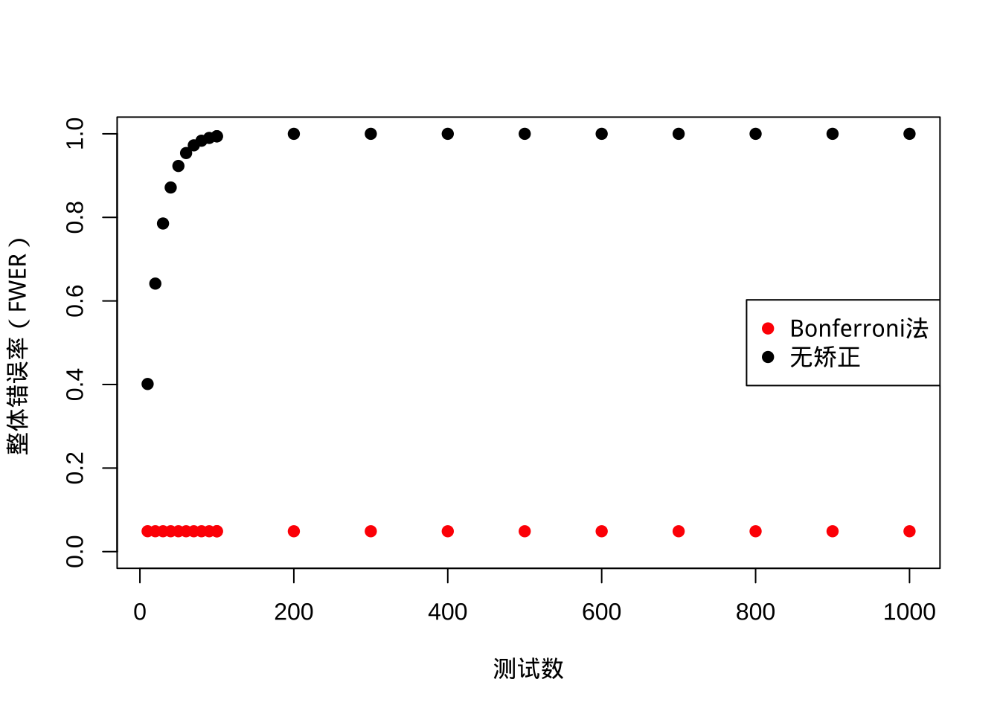
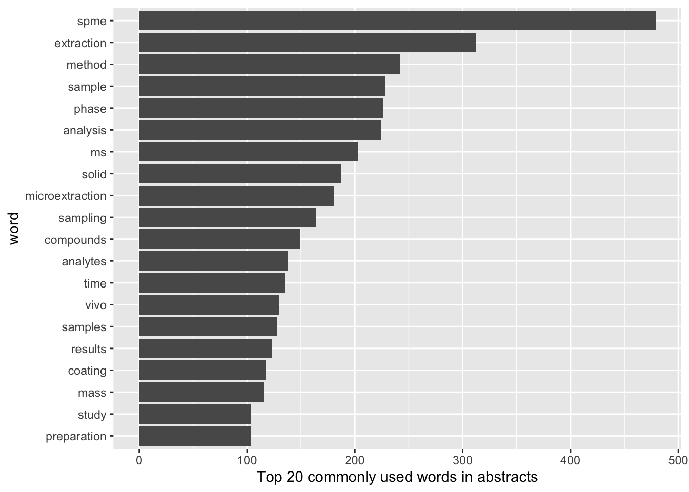
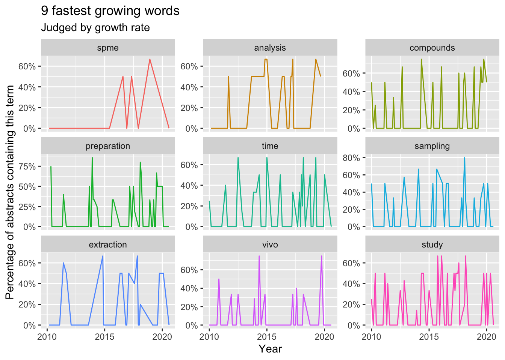
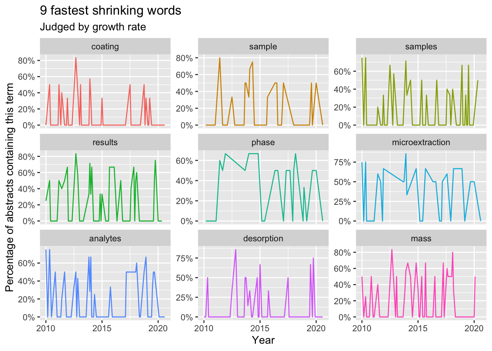

坑 7 文献
7.1 文献管理
文献管理方面主要包括文献收集、整理、分析与追踪，目的是获取当前研究趋势。用认知过程阶段可以分成三个：从无到有、从有到精与从精到用，从无到有是指刚进入一个新领域时的状态，绝大多数研究生跟转行的科研人员都要通过这个阶段构建自己的文献知识库；从有到精指维护与整理与追踪新文献；从精到用阶段指文献知识库体系直接参与科研过程形成产出的过程。
7.1.1 从无到有
刚开展研究工作的第一步就是背景知识的了解，除非你研究生转行，一般本科阶段的学习应该已经掌握了学科基础，这个是共通的背景知识。基于此你要从教科书上相对确定的知识走向文献资料中相对不那么确定的知识，此时最好的开端是一本英文教材，一方面锻炼英文，另一方面英文教材的更新比国内要快（你大概率可以从图书馆借到，而且多数图书馆都有根据你需求订书的服务，不要浪费）。如果你精力足够，甚至可以联系作者问下是否可以翻译，这样一举多得，不过我没操作过，只是建议。另一个思路是通过 MOOCs 来系统学习，国内外很多高校放到网上的课程授课老师都属于接受新思想比较快的人，讲义也比较前沿，系统性比较高。还有一个不太通用的方法是阅读近些年的博士论文，其文献部分一般都是相关信息，不过能不能找到就不好说了。这个阶段一般要两三个月，不要心急，先把基础打好。前面掉的坑越多，后面跳坑就更有经验。
一般而言，一项学术成果要先发表，然后被综述评论，然后进入研究生课程讨论班，然后进入本科生课程讲义，最后才进入学科经典教材的更新。所以你可以倒着去走这个流程，越往后可能越不容易懂，但循序渐进总比一下读前沿论文被搞晕要好。有了相对前沿的教材或讲义作为知识框架，你的脑子里此时应该比较清楚导师让你做的东西或自己打算做的东西在学科中的定位，解决的是什么科学或工程问题，此时可以进行基于关键词检索的文献收集了。
一个良好的搜索返回的结果应该在10篇以内，首先要是综述，然后关键词检索方面建议学点逻辑运算符来过滤掉不相关信息，如果你上一阶段看的书是5年前更新的，那就只去关注最近5年的综述；如果你做的领域实在太新，那就把关键词信息的同义词跟近义词也加到搜索里；如果你能找到一篇写的特别好的综述或者有高人指点的论文，那是最高效的方法，可遇不可求。这10篇论文请按年为单位每1-2年选一篇综述去看，一月内读完，要求是精读，也就是论文里提到的研究都加到你的文献库里并阅读细节，同时可参考综述章节对文献库进行分组。一定要做笔记，而且要进行结构化的笔记或思维导图，这个阶段时间可能比较长也比较累，成果是当你去听系里的报告时，你大概能将报告定位到你的笔记框架里。到此文献库就从无到有了。
7.1.2 从有到精
有了文献库不代表就不用读了，你要建立一个体系来整理并追踪最新文献，这一阶段希望你早就了解 RSS 是怎么回事并且使用过 RSS 阅读器。如果没有，邮件订阅也不失为一个良方。这里我要提示一下，一般文献库管理工具都提供针对单篇文献的笔记功能，不要用。请自建按研究主题的笔记，把新的有意思的新论文连同你以后可能引用的语句直接摘到相关主题的笔记里，而且要让你的笔记可以反链到数据库或通过 doi 可以直接找到原文（推荐后者）。没别的意思，我希望你的笔记稍加整理就可以作为综述发表，省的你次次重返工。建议文献追新频率每周一次，固定时间，看到好的文章就马上消化掉。
7.1.3 从精到用
文献信息的收集与整理不是为了写笔记，是为了需要用的时候瞬间能够用到，例如写一个技术报告，给别人审稿，还有最重要的：写科技论文。科技论文不同于其他文体一个最显著的特点就是参考文献体系的支撑：所有的讨论都要起于前人的发现，参考文献事实上经常是考察作者知识面的关键，对前人工作的遗漏会严重降低文章的系统性与创新性，经常会被审稿人一票否决，哪怕其实你做的跟前人是不一样的。另外的使用就是报告幻灯片跟其他学术交流场景，如果你能做到在大脑或笔记中快速定位到一个观点或现象然后几句话说清楚，这个习惯能帮你离开学术界后在其他行业直接展开降维打击。绝大多数离开学术界的人都不会继续保持了解前沿动态的习惯而更多依赖过往经验，一个人的经验如何去抗衡一堆参考文献背后成百上千人的经验？当然有些东西那些成百上千人也许都不知道，特别是工程上的。不过这种“学院派”的研究习惯最大的好处就是让人更谦逊些，知道一山更比一山高，处处重峦叠嶂。那些上来就趾高气昂且沉醉于自己小圈子的人，不管在学术界还是其他行业，九成以上是鼠目寸光之辈，请远离这些人。
谈文献管理，我希望不要掉到工具选择的坑里，要构建完整的知识管理体系，哪怕是基于便签的只要能实现头脑知识的更新换代就可以了，如果能方便写作投稿，那就更好了。切不可舍本逐末，单纯把文章发表作为目标去优化，毕竟所有的短期目标都要最终整合成你学术生涯的一部分，可以抽时间去想想一些简单的问题：
- 我的研究究竟有没有实际意义？
- 我的发现是否有助于学科发展或写入教科书？
- 我现在纠结的事10年20年后会不会纠结？
以人之渺小，所有的时间都是浪费，但你要为自己浪费的时光赋值。
7.2 信息收集
文献信息要采用被动收集来获得实时更新，被动收集就是通过加入邮件列表、新闻组或订阅期刊或数据库关键词的 RSS 来完成。信息收集有三个层次，最低就是关键词相关文献，这个主要依赖 RSS 或追踪重点课题组，关注这个可以保证对自己研究方向的掌握，不仅是期刊论文，预印本与会议论文也要关注到；中间层就是专业类顶级期刊，关注这部分信息可以对学科发展趋势有所了解；如果还有时间精力，可以关注综合类期刊，例如nature、pnas、science、NEJM、JAMA等，了解重大科学问题。
阅读文献时，要合理分配时间，科技文献已经超越了人脑处理信息的能力了。一般而言都要读题目， 20-50%读摘要，5-10%看图，1-3%读全文。网上一般都可以找到摘要，如果需要全文，可以在 twitter 上用 #icanhazpdf 找、可以用fulltext包找、可以用 unpaywall 的 API 找、可以用Open Access Button的 API 来找、当然也可以找作者要或者找有权限的朋友帮忙。
文献管理软件方面有收费的也有免费的，一般而言可通过咨询自己所在科研机构的图书馆来获取是否购买了相应的软件，一般图书馆也提供使用培训。早期文献管理软件之间差异还是明显的，但到今天基本同质化了。
7.3 文献引用
文献的收集是为了使用，科研中最主要使用文献的场景就是论文写作，当你想参考别人的研究结论或研究数据时，一般会在相应位置插入参考文献（引文）。然后，在论文的结尾或章节页面结尾要对引用过的参考文献进行列表，方便读者按图索骥。引文与列表要有定位功能，引文要有对应列表展示题录信息，列表要保证读者可以根据期刊、作者等信息可检索到原始文献。现在很多出版商都会提供富文本的论文，里面的参考文献都可以直接链接到原文网页，当然作者不必要实现这个功能，但作者一般要保证自己初稿是符合待投期刊格式的，这些在投稿指南中都会写的很清楚。
如何保证引用符合格式要求是研究人员要注意的，期刊格式要求其实主要就是限定页面布局与参考文献格式，主流期刊会提供 Word 文档模版与 LaTeX 宏包两种方式，前者很难限定参考文献格式，后者使用难度很高，都是要配合文献管理软件的对应插件来实现。文献排版的底层逻辑是在插入文献时在论文里生成一个针对该文献的锚点，当编译或格式化时，通过锚点查找你文献库（一般是独立的文件保存，不同文献管理软件不一样，bib文件相对通用性好些）里的题录信息，然后按照特定格式要求生成论文里的引文与文末的文献列表。引文有时是数字，有时是人名与年份，一般都很简短；文献列表信息量更大些，更方便读者查找源头，格式与排序不同期刊的要求也差距很大。
其实，每篇文章的题录都可以生成特定值，甚至直接就是原文链接，具象化的产物就是 DOI ，你可以通过文章的 DOI 指纹与在线数据转换接口快速得到更丰富的信息。现代科研里，文献列表的信息越来越不如网站链接便利，可以设想未来的期刊应该主要是网页版，且引文可以通过超链接互通，这样的学术交流效果应该是最好的。不过，眼下我们还是要遵照期刊要求投稿，不过现在期刊对于格式的要求已经因为自动化排版流程而越来越少，科研工作者可以把精力更多放在内容生产上而非手工整理格式，效率低且错误率高。
7.4 文本挖掘
我们可以借助文本挖掘的工具来探索大量文献中的趋势，这对快速了解某期刊或某关键词的学术界研究趋势很有帮助，也可以作为论文前言的论据。文本挖掘不依赖逐字逐篇阅读文献，更多是依赖文献标题或摘要甚至全文中词汇的词频与相关性等统计指标来推测研究趋势。
文本挖掘目前技术上虽然成熟但精度上并不高，要谨慎使用该技术。一般而言，文本挖掘的时间跨度不超过10年且最好5年以内，因为综述跨度一般不超过10年，可以直接依赖10年内出版的综述来了解研究现状。在实战上，我们可以直接使用支持自然语言学习的统计软件来进行文本挖掘，也可以通过文献信息学软件来做，前提是准备好搜索语句或文献题录库。这里我们用案例来理解下这种文献分析方法。
7.4.1 关键词
以关键词为核心的文本挖掘旨在寻找所有该关键词相关研究的时间变化趋势与相关子领域。技术上首先利用关键词去寻找在线文摘数据库中的论文题录，然后提取摘要部分进行分词并统计词频。这里我们用“mass spectrometry”作为关键词搜索2010到2020年间发表在 ES&T 上的论文做演示。
library(scifetch)
library(lubridate)##
## Attaching package: 'lubridate'## The following objects are masked from 'package:base':
##
## date, intersect, setdiff, unionlibrary(dplyr)##
## Attaching package: 'dplyr'## The following objects are masked from 'package:stats':
##
## filter, lag## The following objects are masked from 'package:base':
##
## intersect, setdiff, setequal, unionlibrary(tidytext)
library(stringr)
library(ggplot2)
library(tidyr)
library(broom)
library(purrr)
library(scales)##
## Attaching package: 'scales'## The following object is masked from 'package:purrr':
##
## discard# 10年跨度 MeSH 关键词 期刊ES&T
query <- '"mass spectrometry"[MeSH Terms] AND 2010/01:2020/01[DP] AND 0013-936X[TA]'
tmdf <- getpubmed(query, start = 1, end = 10000) %>%
getpubmedtbl() %>%
mutate(time = as.POSIXct(date, origin = "1970-01-01"),
month = round_date(date, "month"))## 822 records founds# 摘要分词
wordfabs <- tmdf %>%
filter(nchar(abstract) > 0) %>%
unnest_tokens(word, abstract,drop = F) %>%
anti_join(stop_words) %>%
filter(str_detect(word, "[^\\d]")) %>%
filter(!str_detect(word, "abs")) %>%
group_by(word) %>%
mutate(word_total = n()) %>%
ungroup() %>%
mutate(source = 'abstract')## Joining, by = "word"# 可视化词频前20的关键词
wordfabs %>%
count(word, sort = TRUE) %>%
top_n(20,n) %>%
mutate(word = reorder(word, n)) %>%
ggplot(aes(word, n)) +
geom_col(show.legend = FALSE) +
ylab("Top 20 commonly used words in abstracts") +
coord_flip()
同时我们可以看下这10年关键词的变化趋势。
papers_per_month <- tmdf %>%
group_by(month) %>%
summarize(month_total = n())## `summarise()` ungrouping output (override with `.groups` argument)# 摘要中关键词
word_month_counts <- wordfabs %>%
filter(word_total >= 100) %>%
count(word, month) %>%
complete(word, month, fill = list(n = 0)) %>%
inner_join(papers_per_month, by = "month") %>%
mutate(percent = n / month_total) %>%
mutate(year = year(month) + yday(month) / 365) %>%
filter(percent<1)
# 计数数据广义二项回归
mod <- ~ glm(cbind(n, month_total - n) ~ year, ., family = "binomial")
# 计算斜率
slopes <- word_month_counts %>%
nest(-word) %>%
mutate(model = map(data, mod)) %>%
mutate(models = map(model,tidy)) %>%
unnest(cols = c(models)) %>%
filter(term == "year") %>%
arrange(desc(estimate))## Warning: All elements of `...` must be named.
## Did you want `data = c(month, n, month_total, percent, year)`?# 快速成长关键词
slopes %>%
head(9) %>%
inner_join(word_month_counts, by = "word") %>%
mutate(word = reorder(word, -estimate)) %>%
ggplot(aes(month, n / month_total, color = word)) +
geom_line(show.legend = FALSE) +
scale_y_continuous(labels = percent_format()) +
facet_wrap(~ word, scales = "free_y") +
expand_limits(y = 0) +
labs(x = "Year",
y = "Percentage of abstracts containing this term",
title = "9 fastest growing words",
subtitle = "Judged by growth rate"
)
# 衰退关键词
slopes %>%
tail(9) %>%
inner_join(word_month_counts, by = "word") %>%
mutate(word = reorder(word, estimate)) %>%
ggplot(aes(month, n / month_total, color = word)) +
geom_line(show.legend = FALSE) +
scale_y_continuous(labels = percent_format()) +
facet_wrap(~ word, scales = "free_y") +
expand_limits(y = 0) +
labs(x = "Year",
y = "Percentage of abstracts containing this term",
title = "9 fastest shrinking words",
subtitle = "Judged by growth rate"
)
同时，我们也可以利用词频相关来研究关键词聚类情况。
library(widyr)
library(igraph)##
## Attaching package: 'igraph'## The following objects are masked from 'package:purrr':
##
## compose, simplify## The following object is masked from 'package:tidyr':
##
## crossing## The following objects are masked from 'package:dplyr':
##
## as_data_frame, groups, union## The following objects are masked from 'package:lubridate':
##
## %--%, union## The following objects are masked from 'package:stats':
##
## decompose, spectrum## The following object is masked from 'package:base':
##
## unionlibrary(ggraph)
title_word_pairs <- wordfabs %>%
pairwise_count(word,line,sort = TRUE)## Warning: `distinct_()` is deprecated as of dplyr 0.7.0.
## Please use `distinct()` instead.
## See vignette('programming') for more help
## [90mThis warning is displayed once every 8 hours.[39m
## [90mCall `lifecycle::last_warnings()` to see where this warning was generated.[39mset.seed(42)
title_word_pairs %>%
filter(n >= 150) %>%
graph_from_data_frame() %>%
ggraph(layout = "fr") +
geom_edge_link(aes(edge_alpha = n, edge_width = n), edge_colour = "cyan4") +
geom_node_point(size = 1) +
geom_node_text(aes(label = name), repel = TRUE,
point.padding = unit(0.2, "lines")) +
labs(title = "Bigrams in title") +
theme_void()
更直接的方法是用主题模型来寻找子领域，例如我们可以指定6个子领域输出其前10关键词。
desc_dtm <- wordfabs %>%
count(line, word, sort = TRUE) %>%
ungroup() %>%
cast_dtm(line, word, n)
library(topicmodels)
desc_lda <- LDA(desc_dtm, k = 6, control = list(seed = 42))
tidy_lda <- tidy(desc_lda)
top_terms <- tidy_lda %>%
group_by(topic) %>%
top_n(10, beta) %>%
ungroup() %>%
arrange(topic, -beta)
top_terms %>%
mutate(term = reorder(term, beta)) %>%
group_by(topic, term) %>%
arrange(desc(beta)) %>%
ungroup() %>%
mutate(term = factor(paste(term, topic, sep = "__"),
levels = rev(paste(term, topic, sep = "__")))) %>%
ggplot(aes(term, beta, fill = as.factor(topic))) +
geom_col(show.legend = FALSE) +
coord_flip() +
scale_x_discrete(labels = function(x) gsub("__.+$", "", x)) +
labs(title = "Top 10 terms in each LDA topic",
x = NULL, y = expression(beta)) +
facet_wrap(~ topic, ncol = 2, scales = "free")
7.4.2 作者
同样的，我们也可以研究某个作者的研究主题与变化趋势。这里用加拿大滑铁卢大学 Jaunsz Pawliszyn 教授的数据来说明下。
# 10年跨度
query <- 'janusz pawliszyn[AU] AND 2010/01:2020/01[DP]'
tmdf <- getpubmed(query, start = 1, end = 10000) %>%
getpubmedtbl() %>%
mutate(time = as.POSIXct(date, origin = "1970-01-01"),
month = round_date(date, "month"))## 195 records founds# 摘要分词
wordfabs <- tmdf %>%
filter(nchar(abstract) > 0) %>%
unnest_tokens(word, abstract,drop = F) %>%
anti_join(stop_words) %>%
filter(str_detect(word, "[^\\d]")) %>%
filter(!str_detect(word, "abs")) %>%
group_by(word) %>%
mutate(word_total = n()) %>%
ungroup() %>%
mutate(source = 'abstract')## Joining, by = "word"papers_per_month <- tmdf %>%
group_by(month) %>%
summarize(month_total = n())## `summarise()` ungrouping output (override with `.groups` argument)# 可视化词频前20的关键词
wordfabs %>%
count(word, sort = TRUE) %>%
top_n(20,n) %>%
mutate(word = reorder(word, n)) %>%
ggplot(aes(word, n)) +
geom_col(show.legend = FALSE) +
ylab("Top 20 commonly used words in abstracts") +
coord_flip()
# 摘要中关键词
word_month_counts <- wordfabs %>%
filter(word_total >= 100) %>%
count(word, month) %>%
complete(word, month, fill = list(n = 0)) %>%
inner_join(papers_per_month, by = "month") %>%
mutate(percent = n / month_total) %>%
mutate(year = year(month) + yday(month) / 365) %>%
filter(percent<1)
# 计数数据广义二项回归
mod <- ~ glm(cbind(n, month_total - n) ~ year, ., family = "binomial")
# 计算斜率
slopes <- word_month_counts %>%
nest(-word) %>%
mutate(model = map(data, mod)) %>%
mutate(models = map(model,tidy)) %>%
unnest(cols = c(models)) %>%
filter(term == "year") %>%
arrange(desc(estimate))## Warning: All elements of `...` must be named.
## Did you want `data = c(month, n, month_total, percent, year)`?# 快速成长关键词
slopes %>%
head(9) %>%
inner_join(word_month_counts, by = "word") %>%
mutate(word = reorder(word, -estimate)) %>%
ggplot(aes(month, n / month_total, color = word)) +
geom_line(show.legend = FALSE) +
scale_y_continuous(labels = percent_format()) +
facet_wrap(~ word, scales = "free_y") +
expand_limits(y = 0) +
labs(x = "Year",
y = "Percentage of abstracts containing this term",
title = "9 fastest growing words",
subtitle = "Judged by growth rate"
)
# 衰退关键词
slopes %>%
tail(9) %>%
inner_join(word_month_counts, by = "word") %>%
mutate(word = reorder(word, estimate)) %>%
ggplot(aes(month, n / month_total, color = word)) +
geom_line(show.legend = FALSE) +
scale_y_continuous(labels = percent_format()) +
facet_wrap(~ word, scales = "free_y") +
expand_limits(y = 0) +
labs(x = "Year",
y = "Percentage of abstracts containing this term",
title = "9 fastest shrinking words",
subtitle = "Judged by growth rate"
)
同样，我们可以研究下其发表的期刊偏好。
table(tmdf$journal)[order(table(tmdf$journal),decreasing = T)][1:10] ##
## Anal Chem Anal Chim Acta J Chromatogr A
## 44 33 32
## Bioanalysis Environ Sci Technol J Sep Sci
## 9 7 7
## Angew Chem Int Ed Engl Sci Rep Talanta
## 6 6 6
## Analyst
## 47.4.3 期刊
期刊也可以用上述分析来研究期刊偏好与学科发展趋势。
7.5 文献信息学
专门的文献信息学工具也可以拿来进行学术趋势的挖掘，因为文献题录是高度结构化的数据，所以文献间关系可以用结构化数据来构建联系。基于引用关系我们可以找到某个关键词或期刊的节点论文。引用也可以跟文本分析相联系，用来寻找高引论文的文本写作风格。而基于研究人员的时空分布我们可以评估研究国际化与合作水平。文献信息学中也有专门的指标用来评估研究趋势或文章/学者影响力，可了解相关概念与使用，但不要过度解读与依赖，学科前沿并不稳定，量化指标通常只能描述一部分趋势。
7.6 荟萃分析
荟萃分析常用来对已发表的实验结果进行二次分析得到一个更全面的结论，常用于心理学、流行病学与经济学研究等。其应用场景通常是想回答一个被重复研究过的科学问题，例如某种疾病在不同人群中的风险比等。不过，不同实验精度不同、样本量不同、方差不同、效应也会不同，此时荟萃分析就可以用来汇总出一个关于结论的结论，本质上是一个层级模型。
荟萃分析有两种基本模型，一种是固定效应模型，一种是随机效应模型。前者只有确认不同研究都针对同一群体时才适合用，然而绝大多数情况下不同研究的群体是不一样的，因此实际使用中随机效应模型用的更多，因为其考虑了不同研究自身的随机性。
固定效应模型对总效应的估计是基于对不同研究方差的倒数加权来计算的，也就是说研究的标准误越高，其对总效应的贡献就越小，具体公式是：
\[\hat\theta_F = \frac{\sum\limits_{k=1}^K \hat\theta_k/ \hat\sigma^2_k}{\sum\limits_{k=1}^K 1/\hat\sigma^2_k}\]
如果样本存在异质性，那么就要用随机效应模型。在随机效应模型中，我们假设每一研究给出的效应来自于一个分布而不是固定的值，这样我们就还要估计这个分布的不确定度，一般用 $\tau^2$ 来表示。同时，效应可以是连续变量，也可以是二元变量，也可以是类似相关系数的统计量。
荟萃分析的结果通常用森林图来表示，上面会列上单独研究的效应估计及置信区间、权重，也会给出整体效应估计与置信区间。同时，一般荟萃分析的软件也会给出异质性系数及对该系数的假设检验结果，也会给出预测区间。如果异质性系数低于 25% ，我们会认为可以直接用固定效应模型，如果高于75%，则异质性非常大。预测区间给出的是基于当前荟萃分析结果未来研究效应可能出现的区间，通常比估计效应的置信区间要大，但回答的不是一个问题，估计效应的置信区间描述得是多次重复实验后在一定置信水平下真值会出现的区间。
在荟萃分析中，有些个别研究可能对整体估计产生较大影响，所以要进行敏感度分析或影响分析，通常敏感度分析是用留一法来做的，也就是排除掉这个研究去重新估计效应，看前后差距是否显著，如果显著最好排除掉。
有时荟萃分析中研究可以进一步分类，此时可以引入混合效应模型，也就是各分类效应固定，但各分类效应的误差来自于一个分布。同时研究中涉及的变量如果不是分类而是连续变量，那么也可以进行荟萃回归分析，同样可以做固定效应模型与混合效应模型。
荟萃分析中一个重要主题就是发表歧视，小样本研究通常可信度要低于大样本但容易获得明显效应。漏斗图常用来表示不同效应及标准误的汇聚程度，根据对称性检验（Egger’s test）我们可以推测哪些研究结果可能存在发表歧视。另一种发表歧视的检验方法是汇总分析 p 值的分布，如果真实效应存在则应该是左偏的，而不是汇聚到 0.05 附近。
荟萃分析还可以进一步通过对研究质量进行定量后汇总评价，主要用来展示不同操作步骤引入的不确定性。更为复杂的荟萃分析会去考虑不同处理间的直接与间接影响，一般是通过网络分析来进行。同理，这类存在层级结构的分析问题也可以通过结构方程模型来求解，寻找出观察层背后的潜在结构。